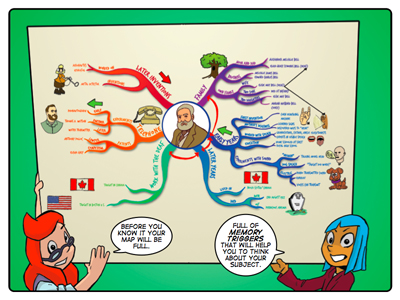

Mind Mapping
Synopsis
In this instructional story Sophie and Farrah show Jojo and Tom (and readers) how to create a mind map.
Background
For centuries great thinkers have organised ideas graphically around a central image. (Consider the notebooks of famous artists, scientists and inventors, which are full of scribbles and doodles arranged non-linearly.) Mind maps as they are understood today were popularised by Tony Buzan. He and others have argued that conventional, linear outlines are not as efficient or effective learning tools as mind maps, which are non-linear and more in tune with the natural functioning of the brain.
The benefits of using mind maps:
• Non-linear construction and reading.
• Allow for dynamic integration of knowledge.
• Allow spatial arrangement.
• Show the hierarchical structure of knowledge.
This story complements the Concept Mapping story.